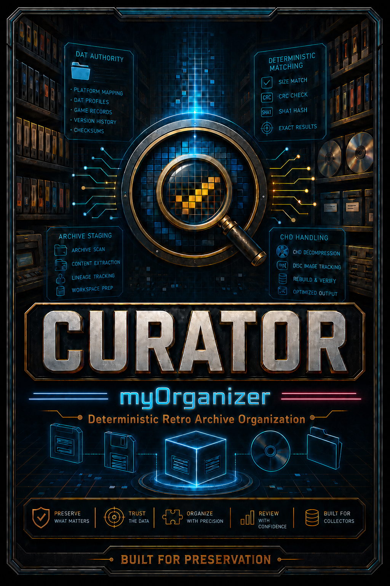

1. Authority Preparation
CURATOR prepares preservation DATs and supporting reference metadata before any collection work begins, establishing a trusted foundation for deterministic processing.

CURATOR analyzes, validates, reconstructs, and organizes emulation collections using DAT-based authority data.
Starting with user-provided source files, CURATOR prepares, validates, documents, and organizes every asset using trusted preservation metadata. Unknown, incomplete, and unsupported content is identified and separated so every decision remains transparent.
The result is a clean collection with a complete audit trail, making it easy to review, maintain, and update as preservation projects continue to evolve.
Discover how CURATOR turns source material and trusted preservation data into a validated, organized collection with a clear audit trail.
Prefer to watch on YouTube? Open the CURATOR video.
CURATOR transforms imperfect source material into a reproducible, preservation-ready collection through a deterministic workflow.
CURATOR prepares preservation DATs and supporting reference metadata before any collection work begins, establishing a trusted foundation for deterministic processing.
Every user-provided file is evaluated against trusted preservation metadata to identify known content, separate unknown material, and eliminate guesswork.

Verified content is organized into a structured, LaunchBox-ready library while preserving the relationship between source material, authority metadata, and final output.

Every action is documented, allowing collections to be reviewed, reproduced, reconciled, and updated as preservation projects continue to evolve.
CURATOR is free, open-source software licensed under the GNU General Public License v3.0 or later.
CURATOR v1.0.0-beta.6 is available from the current release page.
CURATOR remains under active development. Current research areas include performance, audit capabilities, dependency provenance, interoperability, and future product direction.
These items are candidates, not promised features, priorities, schedules, or release commitments. Follow the maintained public roadmap on GitHub .
Review what changed in every public version, including improvements, fixes, and known limitations.
Read the maintained CURATOR changelog or browse every available download on the release archive.
Questions, feedback, bug reports, and project discussions are welcome.
Email: contact@myorganizerhq.com
GitHub: myOrganizer-CURATOR